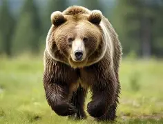

Polar bear
The polar bear (Ursus maritimus) is a large bear native to the Arctic and nearby areas. It is closely related to the brown bear, and the two species can interbreed. The polar bear is the largest extant species of bear and land carnivore by body mass, with adult males weighing 300–800 kg (660–1,760 lb). The species is sexually dimorphic, as adult females are much smaller. The polar bear is white- or yellowish-furred with black skin and a thick layer of fat. It is more slender than the brown bear, with a narrower skull, longer neck and lower shoulder hump. Its teeth are sharper and more adapted
to cutting meat. The paws are large and allow the bear to walk on ice and paddle in the water.

grizzly bear
The grizzly bear (Ursus arctos horribilis), also known as the North American brown bear or simply grizzly, is a population or subspecies[4] of the brown bear inhabiting North America.
In addition to the mainland grizzly (Ursus arctos horribilis), other forms of brown bear are sometimes identified as grizzly bears. These include three living populations—the Kodiak bear (U. a. middendorffi), the Kamchatka bear (U. a. beringianus), and the peninsular grizzly (U. a. gyas)—as well as the extinct California grizzly (U. a. californicus†)[5][6] and Mexican grizzly (formerly U. a. nelsoni†).[7][8] O
n average, grizzly bears near the coast tend to be larger while inland grizzlies tend to be smaller

Black bear
The American black bear (Ursus americanus), or simply black bear, is a species of medium-sized bear which is endemic to North America. It is the continent's smallest and most widely distributed bear species. It is an omnivore, with a diet varying greatly depending on season and location. It typically lives in largely forested areas; it will leave forests in search of food and is sometimes attracted to human communities due to the immediate availability of food.
The International Union for Conservation of Nature (IUCN) lists the American black bear as a least-concern species because of its widespread distribution and a large population, estimated to be twice that of all other bear species combined. Along with the brown bear (Ursus arctos), it
is one of the two modern bear species not considered by the IUCN to be globally threatened with extinction.
➡️ more info